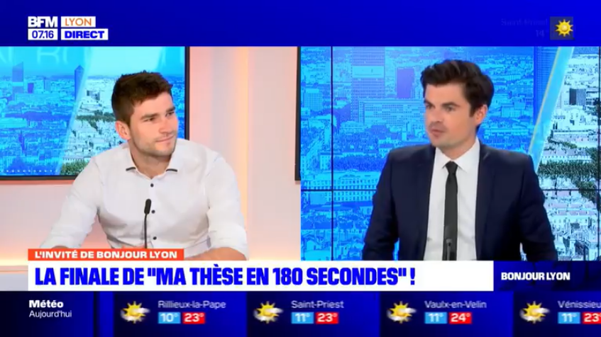

Outils mathématiques : niveau 1 (BUT1 GCGP)
Calculs élémentaires, équations, fonctions usuelles, dérivées, intégrales, polynômes, calculs d’erreur, trigonométrie. 14 × 2 h
Lire (PDF)Supports de cours, publications, contenus de vulgarisation et médias.
Parcours académique.
Exemples de cours et supports.
Calculs élémentaires, équations, fonctions usuelles, dérivées, intégrales, polynômes, calculs d’erreur, trigonométrie. 14 × 2 h
Lire (PDF)Fonctions de plusieurs variables, intégrales, équations différentielles, fractions rationnelles. 14 × 2 h
Lire (PDF)Analyse, dérivées, intégrales, calcul matriciel, fonctions de plusieurs variables, optimisation numérique, algorithmique. 7 × 2 h
Probabilités, loi de répartition, statistiques, fiabilité, échantillonnage. 5 × 2 h
Équations différentielles, nombres complexes, transformée de Laplace, diagrammes de Bode, applications à la modélisation. 8 × 2 h
Lire (PDF)Plan de criblage PB, plan factoriel complet, plan composite centré, optimisation par surface de réponse. 7 × 2 h
Lire (PDF)Certification TOEIC, soutenance de stage, synthèse d’article, présentation scientifique, vulgarisation. 8 × 2 h
Utilisation d’Excel. 5 × 4 h
Lire (PDF)Ateliers Fête de la science, préparation au concours d’éloquence. 10 × 2 h
Transferts thermiques, électricité, mécanique des fluides. 5 × 4 h / groupe
Coordination et pilotage de formations.
Projets de recherche (théorique et expérimental).
Articles, manuscrit, communications.
B. Marguet, Manuscrit de thèse, 2022
Lire (PDF)B. Marguet, FDAA Reis, O. Pierre-Louis — Physical Review E, 2022
Lire (PDF)FDAA Reis, B. Marguet, O. Pierre-Louis — 2D Materials, 2022
Lire (PDF)B. Marguet, E. Agoritsas, L. Canet, V. Lecomte — Physical Review E, 2021
Lire (PDF)O. Vincent, B. Marguet, A.D. Stroock — Langmuir, 2017
Lire (PDF)Ateliers, conférences, séminaires.
Vidéos, outils interactifs, simulateurs.
Deux exemples de vidéos créées pour mes enseignements :
Deviner une fonction cachée à partir de ses valeurs.
Simulations interactives déployées sur Streamlit pour l’enseignement de l’automatisme-régulation.
Vidéos, podcasts et interventions.
